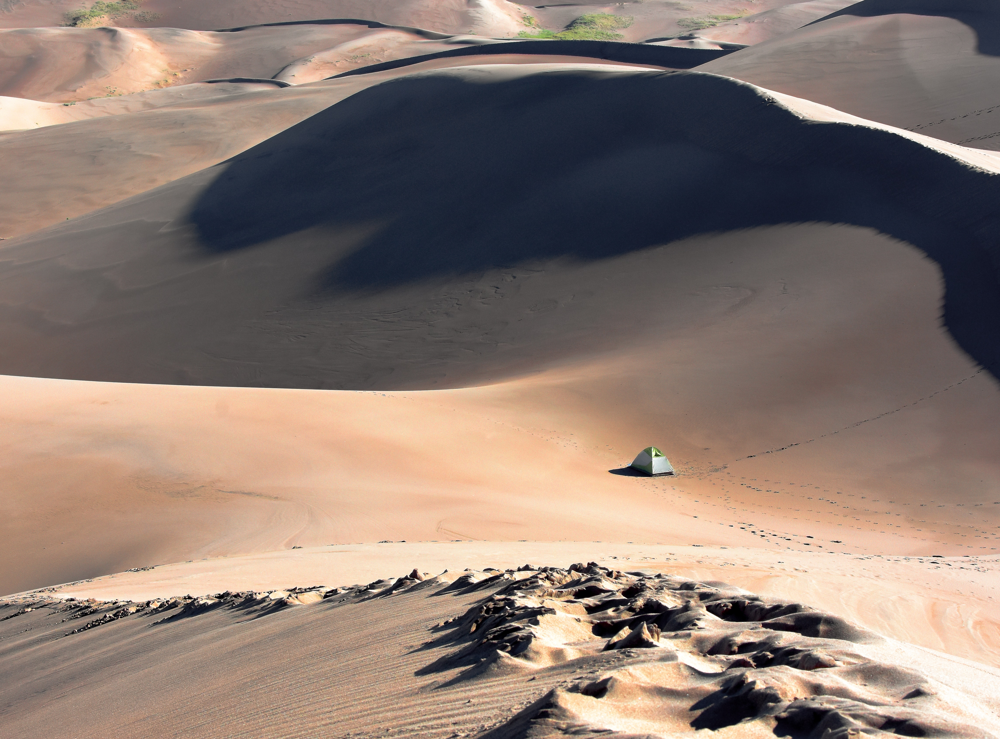

Best Places to Visit Around the World
Top 5 Best Places to Visit in Winter
Explore the beauty of winter wonderlands. Click here for more details.
Top 5 Best Places to Visit in Spring
Experience the bloom of nature in spring. Click here for more details.
Top 5 Best Places to Visit in Summer
Beat the heat with these amazing summer destinations. Click here for more details.
Top 5 Best Places to Visit in Autumn
Witness the beauty of fall foliage in these autumn destinations. Click here for more details.
Top 5 Best Places to Visit All Year
Discover destinations that are perfect any time of the year. Click here for more details.
| Winter | Chicago | Tallinn | Plitvice | Jigokudani | Banff |
About Us
Welcome to Passport Travels, your go-to source for discovering the most amazing destinations around the globe.
Best place to visit around the world
Top 5 of best place to visit in Winter
to see more about alternativ click hereTop 5 of best place to visit in Spring
to see more about alternativ click hereTop 5 of best place to visit in Summer
to see more about alternativ click hereTop 5 of best place to visit in Autumn
to see more about alternativ click hereTop 5 of best place to visit all the year
to see more about alternativ click here| Winter | Chicago | Tallinn | Plitvice | Jigokudani | Banff |
| Spring | St. Lucia | Maldives | Honolulu | Sydney | Asheville |
| Summer | Cape Town | Koh Samui | Maui | Cappadocia | Colombia |
| Autumn | Jiuzhaigou | Tuscany | Lake District | Seoul | Kyoto |
| All the Year | London | Paris | New York | Bangkok | Istanbul |